The Cottage Garden
Fragrant, beautiful flowers dominate the home landscape, including planning, care and antique plants.
Susan Ervin
November/December 1989
The traditional English "everyman's" garden is enjoying a well-deserved American revival.
"On one side is a gloomy garden, with an old man digging in it, laid out in straight dark beds of vegetables, all earthy and mouldy as a newly dug grave, Not a flower or flowering shrub! Not a rose tree or currant bush! Nothing but for sober, melancholy use. Oh, different from the long irregular slips of the cottage gardens, with their gay bunches of polyanthuses and crocuses, their wall-flowers sending sweet odours through the narrow casement, and their gooseberry trees bursting into a brilliancy of leaf, whose vivid proneness has the effect of a blossom on the eye.
-Mary Russell Mitford
Our Village, 1824
I LOVE GARDENS. MY AFFAIR OF the heart started with vegetables, but now I love flower gardens even more. But how often do you see a real flower garden-not just a border or row or clump? People tend to establish basic landscape plantings and to raise straightforward lines of vegetables.
Still, some home gardeners do seem to be becoming more sophisticated. Many of us who have been enthusiastic vegetable gardeners for years are now expanding our reach, captivated by the ornamentals. Hasn't the time come for a flower-garden revival?
When I look at landscape design books, time after time I'm drawn to the history sections, to the pictures of old English "cottage gardens." These can, I think, provide perfect models and the necessary inspiration for contemporary flower gardens. A cottage garden is informal, diverse, evolving, easy to care for, useful. Its old-fashioned, hardy flowers can blend happily with vegetables, herbs, vines, and flowering and fruiting shrubs. Here, primroses grow under a currant bush. There, a rambling rose drapes down from an overhanging branch. Nearby, tall hollyhocks, delphiniums, and foxgloves grow above the Canterbury bells and love-in-a-mist. Who wouldn't love such a garden?
The cottage garden dates from the late Middle Ages. At that time, flowering plants were grown mainly for their useful functions as medicines, flavorings, or foods. Violets and calendulas were eaten in salads. Hellebore roots were ground as a cure for headache and melancholy. The roots of saxifrage, peonies, and Solomon's seal (then known as Solomon's heal) were used to heal wounds. The leopard's-bane's poisonous roots were mixed with meat to kill rats and other pests. Gradually, though, flowers came to be accepted just for themselves, and the garden often became the pride and joy of the cottager.
The upper classes in England were also passionate gardeners but of a very different sort. A medieval garden was enclosed, usually with a high wall: It was a place of peaceful relaxation as much as a setting for plants. By 1600, estate gardens were much more intricate, with formal knot designs, topiary, and elaborate hedge mazes. In the late 17th and early 18th centuries, imitations of Italian and French gardens dominated, typified by classical statuary and by bedding annuals laid in elaborate geometrical patterns.
Later these styles were largely supplanted by the landscape movement, with its park-like sweeping lawns, winding paths, natural-looking lakes, and far perspectives. Yet perhaps even more significant than changing styles was the influx of thousands of new plants from all over the world.
Meanwhile, the cottage garden persevered, unaffected by the nobility's fads. As fashions changed and the new exotics took over the estates, many of the wild flowers survived only in these humble home settings. The cottagers did acquire a taste for some imports: the American currant, tulips from Turkey, jasmine from Persia, fuchsias from South America, chrysanthemums from Japan, and bear's-breeches, rosemary, and love-in-a-mist from the Mediterranean. But their gardens remained primarily reserves for older, simpler, species plants.
Modern Adaptations
The romance of raising "antique" flowers may be enough to catch your fancy, but there's much to be learned from cottage gardens. Many modern growers have limited space but wide interests-flowers, fruits, vegetables, culinary and medicinal herbs, and butterfly- and bird-attracting plants. Why not imitate the old cottagers and grow them all together?
Like their predecessors, contemporary mixed gardens will show much individual variation. Some gardeners may choose to beautify a vegetable plot by loosening up its style and including flowers; others may admit a few of the prettier vegetables and herbs into an ornamental display; still others may go for a mixture of perennials, annuals, and ornamental and fruiting shrubs.
Contemporary design books often call for precisely planning a garden or border-down to the exact number of plants. But each cottage garden develops over time. It isn't laid out in strict patterns like the old formal estate gardens. Instead, it has a more spontaneous evolution that lets you plant what you have, as you can. Rather than submitting to an overall, symmetrical design, it contains pleasant groupings: a favorite color combination here, a group of everlastings with their strawy-textured flowers there, and for fall color, Michaelmas daisies flanking a scarlet-leaved blueberry. The most beautiful composition may be totally unplanned-a last rose of summer drooping over the silver foliage of cottage pinks.
This informal approach is well suited to gardeners who grow their own seedlings. Purchased perennial flowers tend to be rather expensive, and the variety available in most nurseries is often limited. You can grow what you want inexpensively from seed-but keep in mind that your level of success will vary. If I get 34 columbine, six pasqueflower, and 50 bellflower seedlings from my starting efforts, that's just what I'll plant.
"I should plant [the thicket] much too thickly and extravagantly to start with, and then should thin it out gradually as my shrubs and trees developed in size, crowding one another out; I should eliminate the ones I liked least, replacing them with something I liked better, as my taste and knowledge increase.... You could remove, and add, and alter indefinitely. There would be no end to the fun and interest and variety.
- Vita Sackville-West
A Joy of Gardening, 1959
Planning the Garden
Most garden designs call for limiting variety to achieve an overall unified effect. While this makes good sense to me in principle, my true nature, like that of many plant lovers, is more like a kid in a candy store. I want to try everything. And I always overplant. Feeling guilty about my unrestrained approach, I was happy to find the words about planting a thicket, from Vita Sackville-West, one of the world's great gardeners.
The cottage approach allows you to be such an inquisitive collector. True, forethought and knowledge about the plants' habits-their height, character, bloom period, color, and rate of growth-make for a more successful garden, even of this informal, spontaneous style. If you don't know that angelica is big and rank, and sweet yarrow small and delicate, that lady's-mantle can be a pest when allowed to go to seed, or that the foliage of leopard's-bane may disappear in late summer, you could make real aesthetic errors.
There is still no better combination than roses, lilies, and foxgloves planted together.
But, as Sackville-West says, you can always change things! As I've been writing this, I've resolved to dig up all the buphthalmums from my garden. Their foliage has been diseased all summer, and their yellow is too harsh. So off to the orchard they'll go, where they'll look fine with the field flowers. In their place I'll try heliotropes-a truly romantic old-fashioned flower.
In general, the goal is to avoid artificial appearances. For example, rather than planting the conventional tall, medium, and short arrangements of plants from back to front, make groupings of mixed heights.
Likewise, while raised beds are currently very popular with serious vegetable growers, they look too strict and geometrical for cottage gardens. Digging deeply, then planting on the level, will allow a freer, less formal style. Paths through the garden should follow a natural course rather than being straight or twisting needlessly. Stone path ways are especially pretty, with trailing plants like chamomile and thyme between the stones, spilling over and blurring hard edges. Gravel or chipped-bark paths also permit plants to creep over and soften the edges.
Some of my favorite low-growing edging plants are sweet yarrow, small iris, alyssum, liriope, and armeria. Runnerless alpine strawberries are wonderful for both fruit and appearance. English cottagers also used herbs and silver-leaved plants-lavender, santolina, pinks, lamb's ears, and rue-for edging. These neutral plants help set off the more colorful flowers.
Perennials predominate in the cottage garden, but annuals are important too, so leave some generous open spaces for massing annuals. Ones that germinate easily can be direct-seeded among the perennials to bloom at a different season. Many of the old-fashioned annuals are generous self-seeders and will come up all over. Some of the nicest are cleomes (or spider flowers), balsam, love-in-a-mist, bachelor's buttons, cosmos, and larkspur.
If you have a small yard, the whole area can become your garden. But whole yard or part, some sort of enclosure will help to establish the intimate feel of the cottage garden. (This sense of containment is particularly important in suburban areas where lawn joins lawn.) Depending on the effect you wish to achieve, you may choose to have a picket fence, rock wall, or hedgerow.
"There is an old tradition that the Madonna lily throve best in cottage gardens because the housewife was in the habit of chucking out her pail of soapsuds all over the flower bed. Curiously enough this tradition is now confirmed by the advice that young growth of these lilies should be sprayed with soft soap and water, to Prevent Botrytis.
-Vita Sackville-West
A joy of Gardening, 1959
The hedge is probably the least expensive boundary and gives you a way to use some lovely shrubs. A formally pruned hedge would not fit the mood of the cottage garden as well as naturally shaped plants do, pruned just enough to maintain the correct size and density. Hawthorn, barberry, privet, holly, quince, spirea, viburnum, juniper, abelia, rose, and lilac hedges are some possibilities. Be sure to allow enough space between plants so the smaller ones within won't be crowded out. A mixed hedgerow would be lovely-flow ering shrubs, fruiting plants for birds and people, evergreens, or foliage for fall color. Or the garden could be bounded just by trees. Tall shrubs or trees will, of course, shade part of the plot and limit what can be grown underneath. On the other hand, they can also form an effective screen for block ing an unwanted view.
The cottage garden evolves spontaneously, letting you plant what you have, what you can.
Shrubs add height and texture to the garden. Breeders have developed many dwarf shrubs in the last few years that are good for the smaller garden, such as snow mound spirea, dwarf nandina, dwarf hol lies and junipers, dwarf crepe myrtle, bog rosemary, some of the daphnes, and potentillas. If you wish to have some actual lawn in your garden, consider including low-growing flowers and clovers in it. Some good choices for such an "old English herbal lawn" would be chamomile, perennial English daisies, baby blue-eyes, blue-eyed grass, creeping jenny, ajuga, maiden pinks, and Irish moss. Choose a grass that you can let grow somewhat longer than conventional lawn grasses, to look less formal and allow your flowers more time to bloom. (The increased interval between cuttings won't be such a bad thing, either!) I've used colonial bent grass on my lawn.
A large garden affords more choice-and room for those most traditional of flowers, heirloom roses. There is a revival of interest in these full , sweet-scented, drooping, romantic beauties, and so, after a period of neglect, they're available again. We can thank the cottage gardener for helping to preserve them. In those long-ago gardens, roses, lilies, and foxgloves were often planted together, and there still is no better combination. Among the cottagelike roses available for the small garden, the polyanthas are especially recommended for their vigor and profusion yet apparent daintiness.
Another type of plant much loved in the past but mostly ignored now is the vine. Vines growing around a doorway, over an arch or arbor, against a wall, or scrambling across trees and bushes soften the contrasts in a landscape or garden. I've put up log arches at my garden's two entries, both through a barberry hedge, and have planted climbing roses and wisteria at each arch. In addition, roses and clematis round the corners of my house. Choose a small-flowered, graceful clematis such as sweet autumn, downy, golden, or montana rubens. In milder climates, you can grow a colorful vining fuchsia, a favorite in the traditional cottage garden.
Avid vegetable gardeners have learned to practice successional planting to maximize yields. The flower gardener should consider using succession, too, to achieve a continuous display of bloom. As a general guideline, late bloomers whose foliage is not too dense to shade out plants below should be planted among lower-growing early bloomers. Some examples of space-saving interplantings of tall, airy plants and low, denser ones are delphiniums over primroses, lilies among roses, clary sage over columbines, bee balm over sweet Williams, and larkspur among cardinal flowers. With wider spacing, almost any combination is possible.
Another vegetable-raiser's trick is choosing for hardiness - especially since one wants the garden to grow as freely and naturally as possible. Often, heirloom-species plants are hardier and more in keeping with the cottage garden than are overly large-flowered hybrids, which often lack grace and may appear gaudy next to their gentler predecessors. Some of our own native wildflowers-such as black-eyed Susans, spiderwort, great blue lobelias, cardinal flowers, bee balm, cranesbill geraniums, goatsbeard, forget-me-nots, bluebells, loosestrife, and creeping jenny make excellent cottage plants.
In olden times, the cottage gardener usually acquired plants by getting a division or some seeds from someone else, so generous, easy-growing specimens were widely spread around. To give a start of a favorite plant to a friend is still among the nicest of gifts and is the quickest and cheapest way to help expand someone's collection.
Eliminate flowers that persist in ailing-except for roses, which are worth any amount of trouble.
Garden Care
Just as with an organic vegetable plot, good soil is vital for success in cottage gardens. Indeed, many flowers require very good drainage if they are to be long-lived. If you plan to have a large garden eventually but are quite sensibly taking several years to achieve it, you can plant a portion now and seed the remainder in attractive, soil-building cover crops such as clover, vetch, and buckwheat.
The old-fashioned warmth and grace of a cottage garden evoke the past for each of us.
Soil fertility will need to be maintained once it's established. The classic cottage gardener was generous with well-rotted manure and spent hops. Modem gardeners would do well to use these and other humus building materials rather than scattering the 10-10-10. A thick mulch will keep weeds from invading, preserve moisture, and eventually add organic matter to the soil as well. I like well-rotted sawdust. Its fine texture and dark color resemble those of good earth, and fallen flower seeds can germinate well in it.
The cottage gardener did not use chemical sprays, of course. Tobacco, turpentine, sulfur, herbal decoctions, and even-as Sackville-West noted-kitchen soapsuds were used to control pests and diseases. Keeping spent flowers and withered foliage cut away will also discourage disease (and encourage bloom). Still, not every plant will thrive. I would suggest eliminating those that persist in ailing. This summer I dusted with sulfur several times to try to control fungus on Stokes' asters, lupines, and roses (my mountain climate is quite hot and humid in the summer). But if they suffer again next year, I'll probably do away with all but the roses, which are worth any amount of trouble to me.
Linking Yesterday to Tomorrow
The cottage gardening style has come to us through hundreds of years of practical experience, years of people loving and tending their gardens and taking pleasure in simple beauty. Something about the old-fashioned warmth and grace of such a garden can still speak to us, evoking our own past. An older visitor to my garden this summer kept saying, "My grandmother had those-and those-and those!" I know I love a certain single white chrysanthemum because it came from plants my mother grew.
Another cottage flower, Fenbow's nutmeg clove pink, dates from the 14th century, when it was used to flavor wine and was known as sops in wine. Apparently lost completely for some time, it was rediscovered in 1960 in the garden of a family whose records showed it had grown there since 1652!
I like to think of myself as one in this long line of gardeners, appreciating the avid growers who preceded me, and pausing in my work today to plant a different kind of seed by holding out a damask rose for my little one to smell.
"Walk in," the garden above seems to say. "The phone, the housework - everything else can wait." And take children into the garden. Loving beauty, they'll soon be able to fall like Rosie - a mahogany bergamot from a coreopsis.
FLOWERS AND HERBS FROM COTTAGE GARDEN
SOURCE LIST (MY PERSONAL FAVORITES)
SEEDS
J.L. Hudson
Box 1058 Redwood City, CA 94064
Seeds collected from around the world. Catalog $1.
Nichols Garden Nursery
1190 ME Pacific Hwy.
Albany, OR 97321
Annuals, perennials, herbs, everlastings herbal lawn mix, even a Cottage Scatter Garden Mix. Also has plants.
Park Seed Co.
Cokesbury Rd.
Greenwood, SC 29647
Tends more toward modem hybrids, but has recently added a good new list of rare perennials.
Thompson & Morgan
Box 1308 Jackson, NJ 08527 Suppliers of many species and English flowers; also vines, herbs, and vegetables. The parent company is in England.
Unwins
Box 9
Farmingdale, NJ 07727
Another American branch of an English company.
Offers mostly annuals.
ROSES
Heritage Rose Gardens
40350 Wilderness Rd.
Branscomb, CA 95417
Shrubs, species and heirloom roses.
Historical Roses
1657 W. Jackson St.
Painesville, OH 44077
Shrubs, heirloom and climbing roses.
Roses of Yesterday and Today
802 Brown's Valley Rd.
Watsonville, CA 95076
Many antique roses and carefully selected modem roses to blend in. Catalog $3.
PERENNIALS AND HERBS
Bluestone Perennials
7211 Middle Ridge Rd.
Madison, OH 44057
Small, less expensive plants; large selection.
Holbrook Farm and Nursery
Rte. 2, Box 223H
Fletcher, NC 28732
Carefully selected perennials, herbs, wildflowers, and bulbs. Catalog $2.
Sexton Nursery
23340H Doane Creek Rd.
Sheridan, OR 97378
Perennials and wildflowers. Catalog $1
SHRUBS
Boyd's Nursery
Box 71
McMinnville, TN 37110
Very inexpensive service for bulk and hedge plants.
Forest Farm
990 Tetherow Rd.
Williams, OR 97544
Containcrized inexpensive plants; a huge selection of native&, species, dwarfs, perennials, herbs, and species roses. My favorite nursery. Catalog $1.
Henry Field's Sea and Nursery Co.
Shenandoah,IA 51602
A good general nursery for ornament shrubbery and perennials, as well as fruits and berries. Inexpensive and reliable.
Wayside Gardens
1 Garden Ln.
Hodges, SC 29695
Costly but exciting selection of beautiful shrubs, perennials, garden trees, and roses. Catalog $ 1.
Woodlanders
1128 Colleton Ave.
Aiken, S.C. 29801
Unusual native and species plants, Catalog $1.50,
|
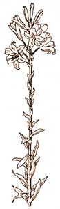 PAT STONE Susan and daughter Rosie enter their garden gateway |
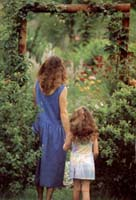 PAT STONE Careopsis, Johnson's blue geraniums, shasta daisies, and nigella bloom side by side. |
 PAT STONE Pink bergamot and larkspurs bloom first in this border that later will hold coreopsis, blueberries, and bush cherries. |
|
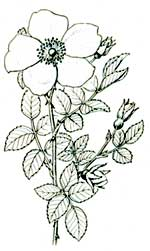 ? SUSAN SIDES (ABOVE LEFT) burst into bloom just as the medicinal echinacea (ABOVE RIGHT) start to fade. Such planned successions keep color coming all year. |
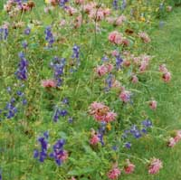 PAT STONE Combining fruits and flowers creates functional beauty, as In this collage of blueberries, phlox, coreopsis, and tomatoes |
PAT STONE The softness of Lavender Dream roses accentuates the regal beauty of a pink daylily as the flowers await a soothing bubble bath. |
|
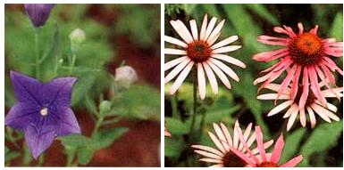 SUSAN SIDES |
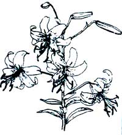 PAT STONE |
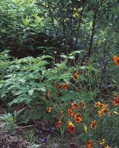 |
|
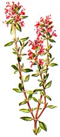 |
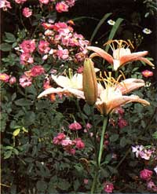 |
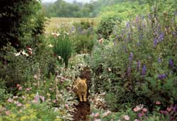 |
 |
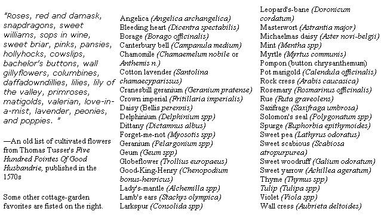 |
|